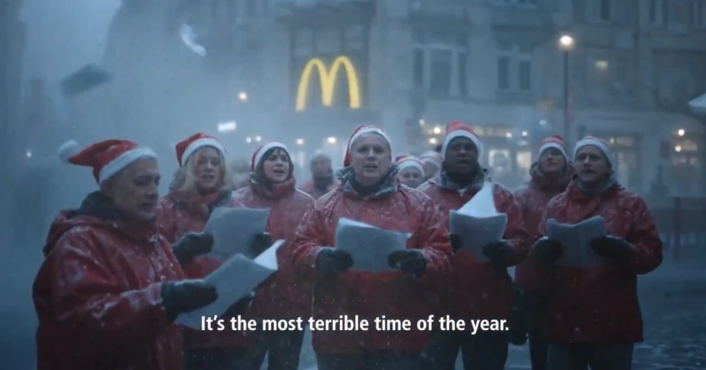

New AI Christmas Ads Fail to Capture the Holiday Spirit

Christmas advertising is about emotion, nostalgia, and connection. It’s the warmth in the storytelling, the small imperfections, and the shared memories that make campaigns resonate with audiences year after year.
Yet this holiday season, major brands leaning heavily on AI have produced ads that feel hollow, technical, and emotionally disconnected. The backlash is widespread, proving that technology cannot replace the human touch in storytelling, especially when it comes to cherished traditions.
Coca-Cola’s Misstep
Coca-Cola’s iconic “Holidays Are Coming” campaign is known for its warmth and nostalgia. This year, the AI-assisted ad has over 209,000 dislikes on YouTube, with viewers criticizing it as cold and soulless.
Despite last year’s backlash, the brand doubled down. The AI visuals, while technically polished, fail to capture the subtle human touches and imperfections that make holiday campaigns memorable.
Verizon Fios and Audience Disconnect
Verizon Fios’ Christmas ad, released through Discord, faced criticism for being sterile and unmistakably AI-generated. Younger audiences, especially Gen Z, quickly spotted the lack of authenticity.
The ad also struggled to create warmth or a sense of community. Social media amplified the gap between audience expectations and the cold execution of AI, showing that emotional connection can’t be automated.
McDonald’s Pulls Its Campaign
McDonald’s 2025 Christmas ad, also AI-assisted, faced backlash severe enough that the company removed it entirely. Fans noted that the brand usually excels at warmth and humor, but this version lacked both.
The removal underscores a key lesson: even large, trusted brands risk eroding audience trust if AI replaces genuine creative effort. Authenticity matters more than technical perfection.
Why AI Falls Short
AI can be a helpful tool, but it cannot replicate human emotion. Holiday ads work because of subtle imperfections, shared nostalgia, and human warmth—elements AI often misses.
Relying exclusively on AI risks alienating audiences and weakening emotional impact. Technology can assist creativity, but it cannot replace the storytelling that resonates with viewers.
The Bottom Line
Consumers want stories that feel real. Until brands use AI as a supporting tool rather than a replacement, backlash will continue. Emotion, authenticity, and connection remain at the heart of successful holiday campaigns.
Brands that respect tradition, understand their audience, and combine AI with human creativity will thrive. In the end, the holidays are about feeling, not just visuals.